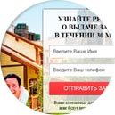

Материнский капитал
На улучшение жилищных условий не дожидаясь 3-летия ребенкаЕсли вы хотите узнать больше информации о материнском капитале и ваших возможностях, оставьте свои имя и контактный телефон и мы вам перезвоним в ближайшее время
Как мы работаем
-
1
Оставьте заявку на нашем сайте
-
2
Мы перезвоним уторним необходимые документы
-
3
Подготовим документы и подпишем договор займа
-
4
Получение денег
-
5
Сдача документов в пенсионный фонд
Документы
Наша компания всегда рады новому сотрудничеству. Мы ценим открытость и доверие в партнерских отношениях. Поэтому у нас нет скрытых условий в договоре, а сам бланк в открытом доступе. Предлагаем Вам, как нашему будущему Партнеру, ознакомиться с договором сотрудничества и другими документами, необходимыми в совместной работе.
Коммерческое предложение Анкета на сотрудничество Договор о сотрудничестве
Частые вопросы
Да можно! С 01.01.2009 года внесены изменения в Федеральный закон от 25 декабря 2008 г. N 288-ФЗ, позволяющие использовать средства семейного капитала на погашение займов или кредитов на приобретение жилья. Таким образом ЦФР выдает займы под материнский капитал семьям в регионах России.
Материнский капитал в 2015 году составляет 453 026 рублей 00 копеек.
Наша компания занимается выдачей займов только на покупку жилья.
К сожалению, нет.
Если второй, третий или последующий ребенок усыновленный, то МК также положен. Право на дополнительные меры государственной поддержки возникает со дня усыновления второго ребенка или последующих детей независимо от периода времени, прошедшего с даты рождения (усыновления) предыдущего ребенка (детей).
Только в отдельных случаях. Отец ребенка может получить сертификат, если мать умерла или была лишена родительских прав в отношении ребенка, в связи с рождением которого возникло право на дополнительные меры государственной поддержки, либо совершила в отношении ребенка (детей) умышленное преступление. Мужчина также может получить сертификат на МК, если является единственным усыновителем второго, третьего и последующих детей.
Нет. Заявление на МК можно подать, если второй или последующий ребенок родился в период с 1 января 2007 года по 31 декабря 2016 года.
Можно, но дети будут собственниками жилья. Вы должны будете при продаже выделить им соответствующие доли собственности в новом жилье. За этим будут следить органы опеки и попечительства.
Нет, мать и дети обязательно должны быть гражданами РФ.
Сроки перечисления денег сокращены. Покупайте квартиру и обращайтесь в Пенсионный фонд России. Деньги перечислят продавцу в течение 2 месяцев со дня подачи вами заявления.
В этом нет необходимости, если при подаче заявления в Пенсионный фонд Вы представите документы, подтверждающие право собственности всех членов семьи.
Да, можно. Главное — чтобы на момент подачи заявления в ПФР они находились в законном браке, что должно быть подтверждено соответствующими документами.
Нет, не обязательно. При распоряжении МК, совместное проживание родителей и детей в этой квартире обязательным условием не является.
Нет, нельзя. При подаче заявления на погашение ипотеки МК среди прочих документов необходимо представить свидетельство о регистрации права собственности. В рассматриваемом случае представить это свидетельство заявитель не может. Следовательно, у Пенсионного фонда не будет оснований принять документы.
Да, можно. В Федеральном законе от 29 декабря 2006 года № 256-ФЗ «О дополнительных мерах государственной поддержке семей, имеющих детей» нет ограничений в части принадлежности закладного обеспечения кредита, который будет оплачен с использованием средств МК.
Получатель МК — не ребенок, а взрослый, как правило, мать. С точки зрения получения материнского (семейного) капитала не принципиально, кто из двойняшек будет объявлен «вторым ребенком». Семья может одинаково потратить средства МК на образование каждого из них, на улучшение жилищных условий. Сумма МК при этом не удваивается.
Никаких возрастных ограничений нет. Право на получение материнского капитала возникает со дня рождения второго, третьего ребенка или последующих детей независимо от периода времени, прошедшего с момента рождения предыдущего ребенка (Федеральный закон от 29 декабря 2006 года № 256-ФЗ «О дополнительных мерах государственной поддержке семей, имеющих детей», статья 3, пункт 7).
Нет, жилье должно находиться (или строиться) на территории Российской Федерации.
Вы можете обратиться в территориальное управление ПФР в любом регионе, независимо от того, есть у вас прописка или нет. Мы сами запросим всю информацию в том управлении, которое выдавало вам сертификат. Так что прописка роли не играет.
Понятие реконструкции определяет не Пенсионный фонд, а Градостроительный кодекс. Реконструкцией считаются работы, в результате которых жилое помещение увеличилось не менее чем на учетную норму площади. То есть под реконструкцией всегда понимается расширение, а не только улучшение качества жилья.
Вы сможете рассчитаться по этому кредиту маткапиталом, если представите документ, в котором указано, что цель кредита — приобретение квартиры. Это может быть отмечено, например, в справке банка об остатке задолженности по кредиту.
Если вы хотите узнать больше информации о материнском капитале и ваших возможностях, оставьте свои имя и контактный телефон и мы вам перезвоним в ближайшее время